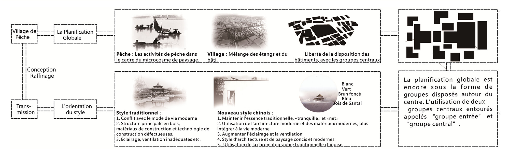
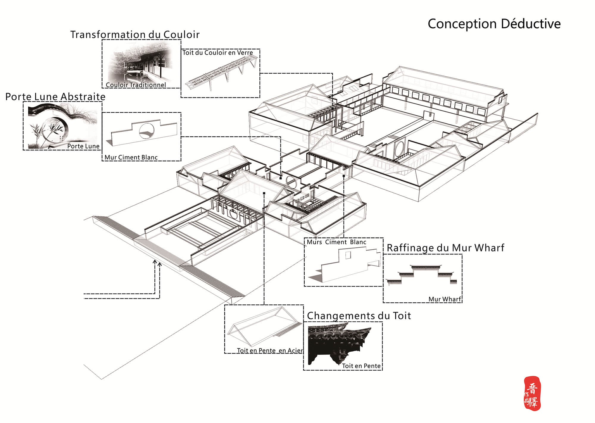
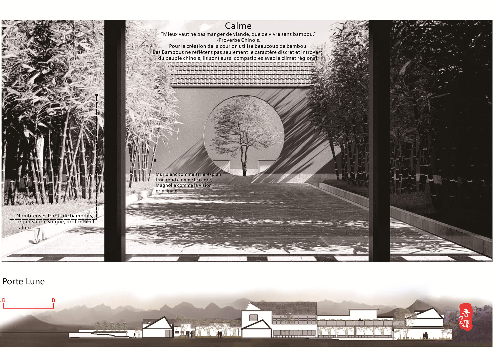

Conception de centre touristique
Les images suivantes peuvent cliquer pour agrandir


Fond de la conception- Avec le développement, l'habitation traditionnelle chinoise, que ce soit au nord ou au sud,a relativement une grande contradiction avec les exigences fonctionnelles des logements modernes et des modes de vie modernes. Deuxièmement, les matériaux de contruction de la structure sont principalement le bois et SA technologie de construction est limité. En outre, la“SI HE YUAN” du NORD nécessite une superficie considérable, et Le patio entouré du sud connait des problemes d'éclairage , de ventilation, etc. Pendant ce temps, les gens n’ont pas confiance en leur architecture traditionnelle.C’est pourquoi cela conduit à la perte du style architectural traditionnel.
Et maintenant des styles traditionnels ont disparu, donc nous avons réfléchi à cela et appris le style trqditionnel pour repondre aux besoins modernes, avec un nouveau langage - "le nouveau style Chinois"
Description de la conception
1、La conception globale du "village de pêche" à travers l'interprétation du "village de pêcheurs", utilise l’effet miroir de l’eau pour refléter l'expression abstraite de l’étang, de la pêche etc.
2、Simuler La disposition des Villages traditionnels(centre fermé rayonnement) par le patio d'entrée et l’effet miroir de l'eau comme les deux groupes centraux.
3、Le nouveau style chinois utilise les techniques de construction modernes dans les éléments architecturaux traditionnels chinois, et pour simplifier et inspirer la forme architecturale, les matériaux, l’aménagement du jardin et d'autres éléments pour le rendre plus adapté aux habitudes de la vie moderne et aux besoins psychologiques .

Conception déductive
{kind=link}

Plans de la conception
{kind=link}
{kind=link}

Calme: “Mieux vaut ne pas manger de viande, que de vivre sans bambou.”-Proverbe Chinois.
Pour la création de la cour on utilise beaucoup de bambou.Les Bambous ne reflètent pas seulement le caractère discret et introverti du peuple chinois, ils sont aussi compatibles avec le climat régional.
{kind=link}
Les rendus
{kind=link}
{kind=link}
Mur: À double paroi: Le mur extérieur en utilisant la fente et l’ouverture de la conception et les murs intérieurs comme des murs normaux.Répondre à la fonction du mur et aussi satisfaire les fontions des fenêtres, de la ventilation, des exigences d'ombrage en même temps.L'espace entre les deux murs permet la transition de l'espace intérieur et extérieur intelligemment.
Apaisant:Conforme à l'exigence " la forme suit le climat" .Grâce à une petite cour, une passerelle, une corniche, des murs, des fenêtres, des ouvertures.Que la reflexion de l'eau et le vent traversant permettent aux utilisateurs de ressentir l'apaisement.Améliorer le confort du bâtiment et réduire la consommation d'énergie.
Calme:Une grande surface des eaux exprime la culture du village de pêche.En même temps, donne un sentiment calme et frais.La réflexion de la surface sur l’eau, augmente le volume de l'espace.
Plaine:Toute la conception est comme une peinture.L'ensemble du bâtiment, y compris tous les détails, utilise le "noir, blanc, gris" série de trois incolores.